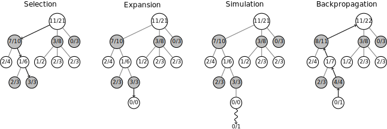

AlphaZero¶
A little bit harder problem:
- Learn to play complex games given only the rules to the game
- Beat the best human players and their best hand-written programs
- Learning time limit: Less than a day
Typical result:
Game 3 - White: AlphaZero Black: Stockfish
1. d4 Nf6 2. c4 e6 3. Nf3 b6 4. g3 Bb7 5. Bg2 Bb4+ 6. Bd2 Be7 7. Nc3 O-O
8. Qc2 Na6 9. a3 c5 10. d5 exd5 11. Ng5 Nc7 12. h4 h6 13. Nxd5 Ncxd5
14. cxd5 d6 15. a4 Qd7 16. Bc3 Rfe8 17. O-O-O Bd8 18. e4 Ng4
19. Bh3 hxg5 20. f3 f5 21. fxg4 fxg4 22. Bf1 gxh4 23. Bb5 Qf7
24. gxh4 Bf6 25. Rhf1 Rf8 26. Bxf6 gxf6 27. Rf4 Qg7 28. Be2 Qh6
29. Rdf1 g3 30. Qd3 Kh8 31. Qxg3 Rae8 32. Bd3 Bc8 33. Kb1 Rf7
34. Qf2 Bd7 35. h5 Ref8 36. Bc2 Be8 37. Rf3 Re7 38. Rxf6 Qxf6
39. Qxf6+ Rxf6 40. Rxf6 Kg7 41. Rxd6 Bxh5 42. Kc1 Re5 43. a5 bxa5
44. Kd2 Be8 45. Ra6 Rh5 46. Bd3 a4 47. d6 Bf7 48. d7 Rh8 49. e5 1-0
The Approach¶
- MCTS – Monte Carlo Tree Search
- Reinforcment Learning
- Deep convolutional neural networks
The DeepMind team published their results five months ago in the December 2018 Science, “A general reinforcement learning algorithm that masters chess, shogi and Go through self-play”. See: https://deepmind.com/documents/260/alphazero_preprint.pdf
Their self-assessment:
“Our results demonstrate that a general-purpose reinforcement learning algorithm can learn, tabula rasa – without domain-specific human knowledge or data, as evidenced by the same algorithm succeeding in multiple domains – superhuman performance across multiple challenging games.”
Assessment by Garry Kasparov:
“I can’t disguise my satisfaction that it plays with a very dynamic style, much like my own!”
Code You Can Run¶
The advancements from AlphaZero were incorporated in incorporated Leela Chess Zero
Leela Chess is free software. See https://github.com/LeelaChessZero/lc0
It is built using Meson with Python 3 but running primary CUDA code on the GPU.
See the LCBlog blog to get started.
Overview of Monte Carlo Tree Search¶
The Algorithm¶
Here is the outline as summarized in the DeepMind paper:
AlphaZero replaces the handcrafted knowledge and domain-specific augmentations used in traditional game-playing programs with deep neural networks, a general-purpose reinforcement learning algorithm, and a general-purpose tree search algorithm.
Instead of a handcrafted evaluation function and move ordering heuristics, AlphaZero uses a deep neural network (p, v) = fθ(s) with parameters θ. This neural network fθ(s) takes the board position s as an input and outputs a vector of move probabilities p with components pa = Pr(a|s) for each action a, and a scalar value v estimating the expected outcome z of the game from position s, v ≈ E[z|s]. AlphaZero learns these move probabilities and value estimates entirely from self-play; these are then used to guide its search in future games.
Instead of an alpha-beta search with domain-specific enhancements, AlphaZero uses a generalpurpose Monte Carlo tree search (MCTS) algorithm. Each search consists of a series of simulated games of self-play that traverse a tree from root state sroot until a leaf state is reached. Each simulation proceeds by selecting in each state s a move a with low visit count (not previously frequently explored), high move probability and high value (averaged over the leaf states of simulations that selected a from s) according to the current neural network fθ. The search returns a vector π representing a probability distribution over moves, πa = Pr(a|sroot).
The parameters θ of the deep neural network in AlphaZero are trained by reinforcement learning from self-play games, starting from randomly initialized parameters θ. Each game is played by running an MCTS search from the current position sroot = st at turn t, and then selecting a move, at ∼ πt , either proportionally (for exploration) or greedily (for exploitation) with respect to the visit counts at the root state. At the end of the game, the terminal position sT is scored according to the rules of the game to compute the game outcome z: −1 for a loss, 0 for a draw, and +1 for a win. The neural network parameters θ are updated to minimize the error between the predicted outcome vt and the game outcome z, and to maximize the similarity of the policy vector pt to the search probabilities πt. The updated parameters are used in subsequent games of self-play.